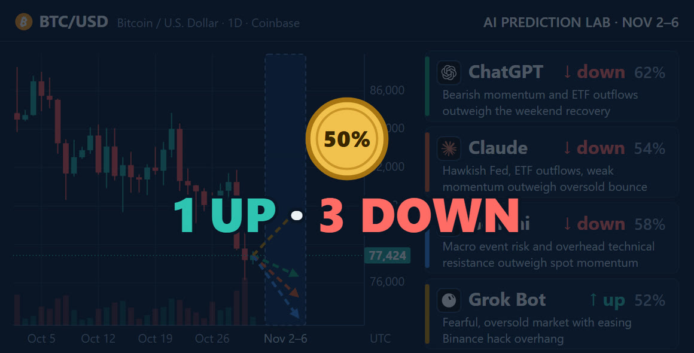

Four AIs call Bitcoin's week of November 2
Every week, four AIs answer the same question about Bitcoin, and the lab records each answer in a public ledger before the week starts. For November 2–6, three of them, ChatGPT, Claude and Gemini, call the week down. Grok Bot calls it up. None of them is very sure: the highest confidence is ChatGPT's 62%, and Grok Bot's 52% is only just above a coin flip.
- 3 of 4call the week lower: ChatGPT, Claude and Gemini
- 62%the highest confidence, ChatGPT's
- 52%Grok Bot's confidence, on the only call for higher
- 0market data in the prompt: each AI searched for its own
The question
Each AI got the same prompt, word for word. The question in it:
Will the Coinbase BTC-USD price at Friday 6 November 2026, 23:59:59 UTC be strictly higher than the price at Monday 2 November 2026, 00:00 UTC?
UP means the Friday price is strictly higher. Anything else counts as DOWN, an unchanged price included. There is no flat option, so each AI has to pick a side. It shows doubt with its confidence: a whole number from 50 to 100, how likely it thinks its call is to be right. 50 is a coin flip.

The calls
BTC in the week before the calls, and which way each model called the week
- ChatGPT Lower Confidence 62%
- Claude Lower Confidence 54%
- Gemini Lower Confidence 58%
- Grok Bot Higher Confidence 52%
The bar shows how sure each model said it was. The mark in the middle is 50%: no surer than a coin flip. Candles: Coinbase Exchange BTC-USD, 4-hour (hollow: rose, filled: fell). The dashed line is the last close before the calls; each arrow is one model's call, up for Higher and down for Lower; its slant shows which way, not how far.
![Daily Coinbase BTC/USD candles through October, a price label at 77,424 and a shaded box for November 2–6, with four dashed arrows from the last candle, one pointing up and three down. Beside it, four cards: ChatGPT, down, 62%: Bearish momentum and ETF outflows outweigh the weekend recovery. Claude, down, 54%: Hawkish Fed, ETF outflows, weak momentum outweigh oversold bounce. Gemini, down, 58%: Macro event risk and overhead technical resistance outweigh spot momentum. Grok Bot, up, 52%: Fearful, oversold market with easing Binance hack overhang.](../img/btc-calls-2026-11-02-cards.jpg)
New this week: they found the data themselves
The prompt comes with no data. Each AI had to search for its own, using whatever tools it has, and decide what matters. The prompt also asked each one to name its sources and give the time of the latest BTC price it saw. So this week tests the research as well as the call. The four answers below differ in what they looked at, and even in the price they found.
The two charts show what each answer says. This page has not checked the prices.
The line runs from the lowest to the highest, not from zero: $77,937.61 to ≈$78,050
- ChatGPT$77,937.613:29 PM on Coinbase's converter, which gives no time zone
- Claude≈$78,050≈16:55 UTC on CoinDesk's live ticker
- Gemini≈$77,994≈16:50 UTC, "via Coinbase and real-time feed updates"
- Grok Bot$78,002.6116:53 UTC on the Coinbase Exchange ticker
The four prices are about $112 apart at most. All were seen on Sunday afternoon, about seven hours before the Monday 00:00 UTC price the calls are measured from.
- ChatGPT6a "Sources used" list at the end, no links
- Claude14site names tagged under its points, no links
- Gemini0no list, tags or links
- Grok Bot5links in the text, the only answer with any
The forms differ, so the bars count what each answer shows, not how much research went into it. A site tagged more than once counts once. Names given only in the text, such as TRM Labs or Farside, are not counted.
In their own words
Each AI ends its answer with a short reason and the two or three factors that matter most to its call. The factors are shown here as each AI wrote them, split by the way each one pulls.
ChatGPT Lower · 62%
- Recent price breakdown and weak weekly performance
- $643 million in daily spot Bitcoin ETF outflows
- Binance recovery progress and potential macro-driven rebound
Claude Lower · 54%
- Hawkish Fed, payrolls Friday
- ETF outflows plus stolen-BTC supply overhang
- Bearish retail sentiment, $76K support held
Gemini Lower · 58%
- U.S. midterm elections event risk
- Weak October price momentum below $80k
- Oversold 14-day RSI near $77k support
Grok Bot Higher · 52%
- Downtrend and ETF outflows
- Fear sentiment and neutral funding after sell-off
- Exchange outflows and hack losses largely covered
In each model's own words, recorded in the ledger with its call.
The prices, figures and sources below are what each AI reported. This page passes them on and has not checked them.
ChatGPT: down, 62%
Its reason: "Bearish momentum and ETF outflows outweigh the weekend recovery."
The latest price ChatGPT saw was $77,937.61, on Coinbase's BTC-USD converter, at 3:29 PM on November 1; it notes that the page gives no time zone. It names six sources: Coinbase, Coinbase BTC-USD price history on Investing.com, a Reuters report on the Binance security incident, Binance's recovery update of November 1, a Bitcoin ETF flow tracker, and the US Bureau of Labor Statistics release calendar.
It counts about $643.2 million leaving US spot Bitcoin ETFs on October 30, citing a tracker that uses Farside data. A spot Bitcoin ETF is a fund that holds bitcoin and trades on the stock market. It also points to the US jobs report, due on Friday, November 6, at 13:30 UTC, about ten and a half hours before the price is checked.
Claude: down, 54%
Its reason: "Hawkish Fed, ETF outflows, weak momentum outweigh oversold bounce"
A hawkish Fed is one leaning toward keeping interest rates high, which tends to weigh on assets like bitcoin. Claude says it could not get a live quote straight from Coinbase. The latest price it saw was about $78,050, on CoinDesk's live ticker, around 16:55 UTC on November 1. It names 14 sources, among them CoinDesk, Yahoo Finance, Kiplinger, Pepperstone and CoinLore.
According to Claude's answer, the Fed held rates at 3.75%–4.00% in a 10–2 vote, the US midterm elections fall on Tuesday, and CoinLore's history shows the first week of a month was positive 56% of the time. In its words: "On balance I lean slightly DOWN, with only a small edge over a coin flip."
Gemini: down, 58%
Its reason: "Macro event risk and overhead technical resistance outweigh spot momentum"
The latest price Gemini saw was around $77,994, at about 16:50 UTC on November 1, "via Coinbase and real-time feed updates", it says. It gave no links.
According to Gemini, Bitcoin ended October down about 7.3%. Its 14-day RSI, a gauge of recent momentum from 0 to 100, sits near 35. Gemini puts the 200-day EMA, a long-run average price, near $76,340, and resistance at $80,000–$80,700. Resistance is a price zone where earlier rises stalled. It also points to the midterm elections on Tuesday and the jobs report on Friday.
Grok Bot: up, 52%
Its reason: "Fearful, oversold market with easing Binance hack overhang"
The latest price Grok Bot saw was $78,002.61 on Coinbase BTC-USD, at 16:53 UTC on November 1, from the Coinbase Exchange public ticker. It was the only one of the four to give links.
According to Grok Bot, the Crypto Fear & Greed Index stands at 34, which the index labels Fear, and funding is +0.01% every 8 hours, which it calls neutral. Funding is the fee that traders betting on a rise and traders betting on a fall pay each other in perpetual futures; near zero, neither side is crowded. It notes that Binance says it has covered about 90–95% of the hack loss, and points to the midterms on Tuesday and the jobs report on Friday at 13:30 UTC. In its words: "Over one week, BTC's direction is close to a coin flip."
How the calls will be checked
- Nov 1, 16:59
Calls recorded The four calls go into the ledger before the week starts.
- Nov 2, 00:00
Start price The Coinbase BTC-USD price the calls are measured from.
- Nov 3
US midterm elections Named by Claude, Gemini and Grok Bot.
- Nov 6, 13:30
US jobs report Named by all four, about ten and a half hours before the end price.
- Nov 6, 23:59:59
End price Strictly higher than the start price counts as UP; anything else counts as DOWN.
- Nov 7
Check Each call is marked a hit or a miss, in the ledger and on this page.
The week ends on Friday, November 6, at 23:59:59 UTC. On Saturday, the lab compares the Coinbase BTC-USD price at that moment with the price at Monday, November 2, 00:00 UTC, marks each call as a hit or a miss, and adds the result to the ledger and to this page.
The calls were recorded at 16:59 UTC on November 1, before the week began. The ledger only grows: an entry is never edited or removed. With each call it stores a SHA-256 fingerprint of the prompt, df6c02d1ffdd468a2d5e46d49a627dc5b653ebe5ef52fd368cf75136b81207c2, so a changed prompt would no longer match.
Updates
Newest first. Each entry is dated, and the text above changes only with a new entry here.
- November 1. First version of this page, with the four calls as recorded.
This is an experiment and documentation, not financial advice. I do not recommend buying or selling anything.